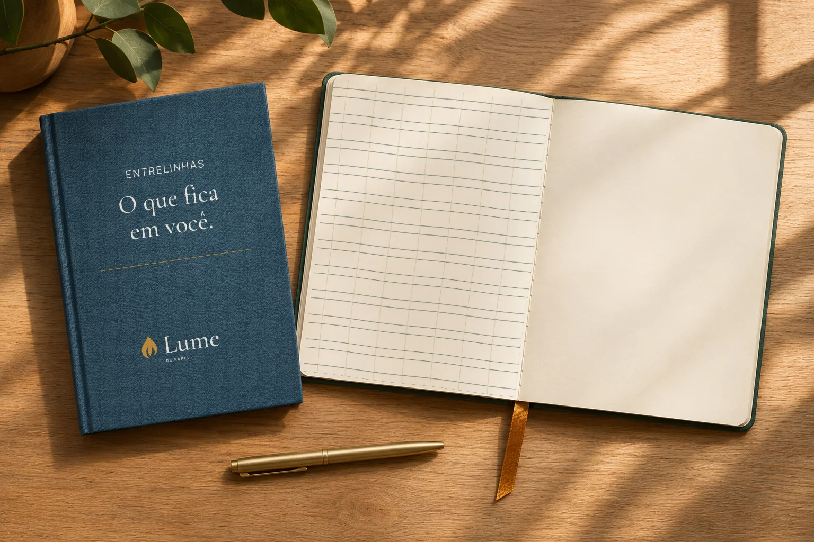
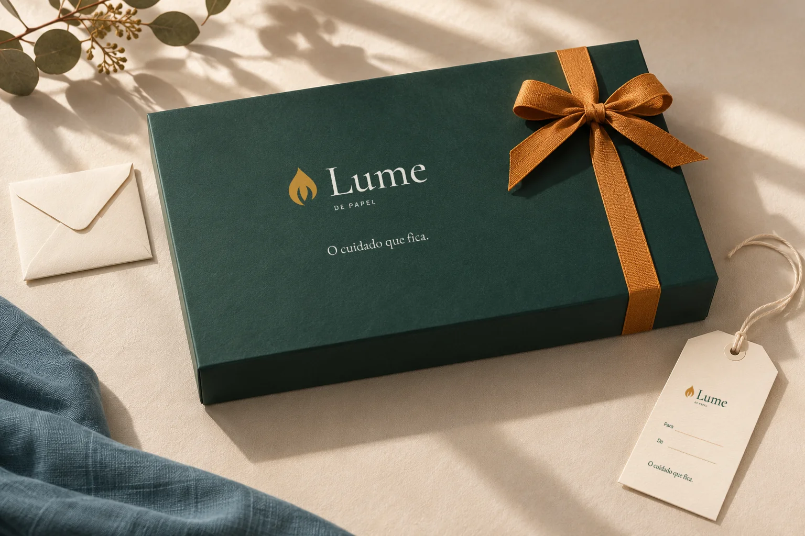
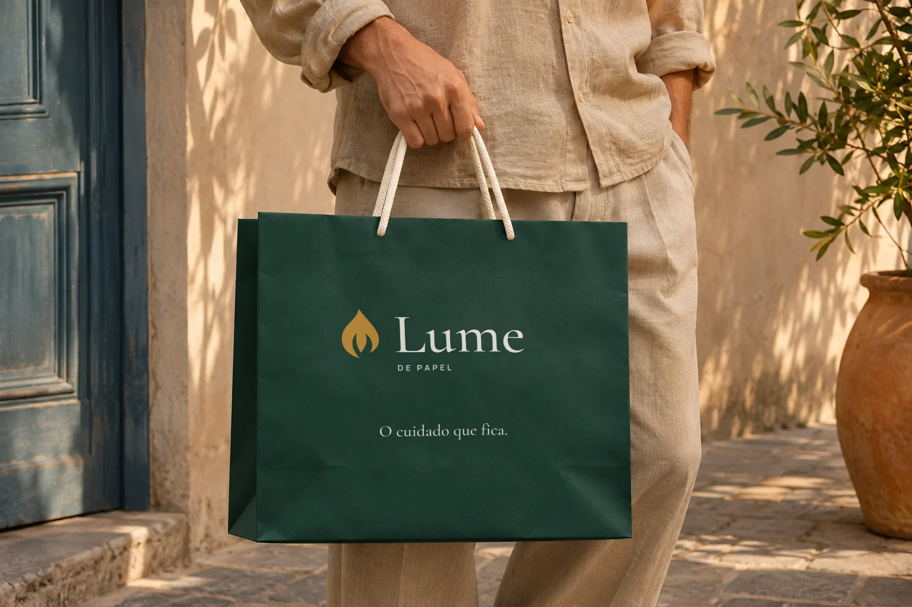
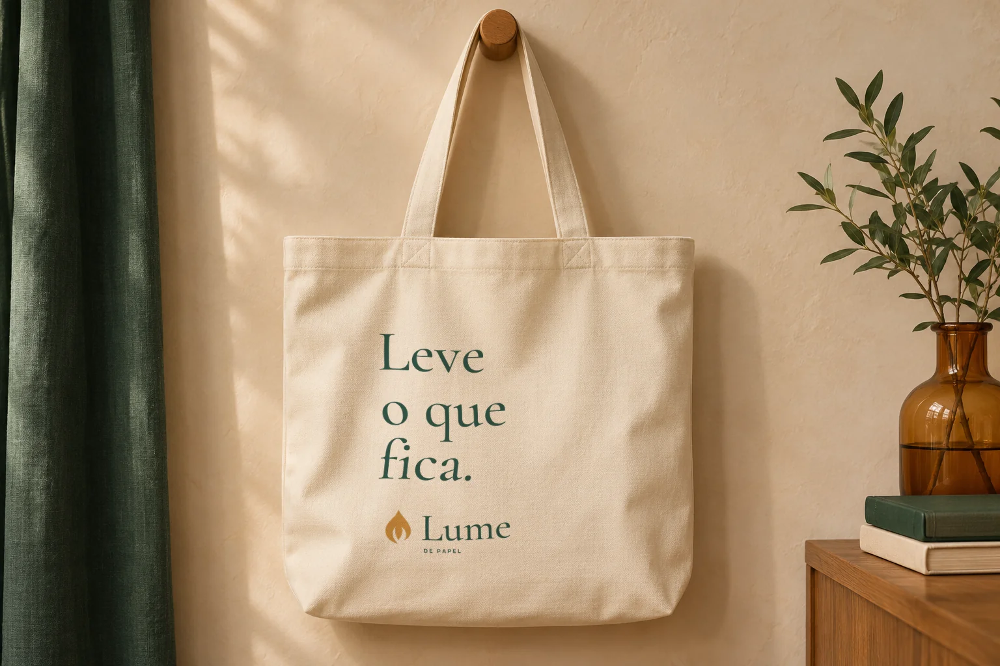
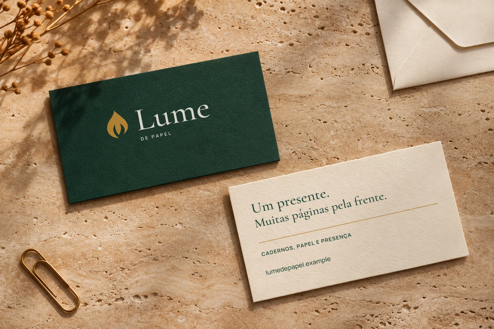
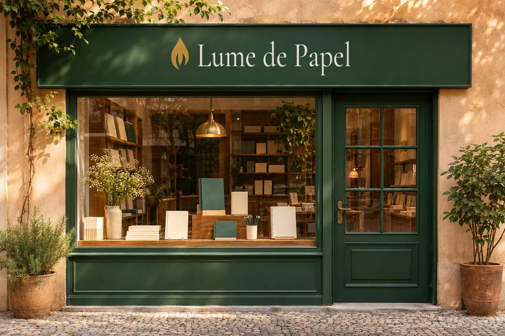

LUME DE PAPEL / 01
O que fica em você.
Conheça a linha Entrelinhas.

Conheça a linha Entrelinhas.

O presente começa no embrulho.

Papel para guardar presença.

Papel de seda e um pequeno selo.

Objetos para acompanhar os dias.

Uma dobra. Um bilhete. Um presente.

Lume de Papel.

Cadernos para presentear.

O cuidado que fica.
Azul ou verde. Qual combina com você?
Conheça EntrelinhasEscolha com calma. Embrulhe com cuidado.
Veja o embrulhoDeixe um pouco de você no papel.
Escreva seu bilhete